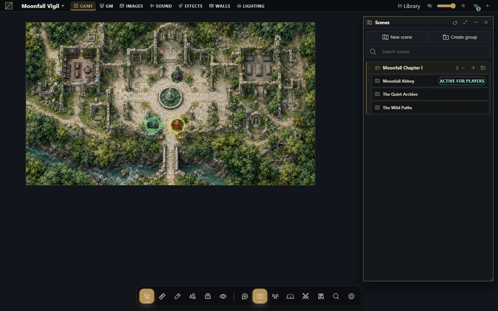

Permissions and safe sharing
Check exactly what a player can view, edit or control before sharing your preparation.


Understand the boundaries
The installation owner administers the host. A campaign GM manages that campaign. Players receive access through campaign membership and resource permissions. A streamer remains read-only. Server checks apply to actions and protected files; a URL or a visible button is not an access grant.
Actor and journal access use levels such as None, Limited, Read and Owner. The exact limited preview depends on the resource. Read access does not grant editing or token control. Scene access, token ownership, journal page access and GM-only sections are separate decisions.
Rehearse sharing
Keep your GM session open and sign in as a player in a separate browser profile.
Give that player the intended actor permissions. Verify that its sheet opens and that unrelated actors remain protected.
Place the actor's token in a visible scene and test movement with the player account.
Share one journal and one page intentionally. Include a harmless sample GM secret and confirm it is absent from the player view.
Activate the intended scene for players and verify the broadcast.
If you use a streamer link, inspect it independently of the player session.
Avoid accidental disclosure
Editor layer visibility in Map Builder is an editing aid: preview and generation include all project layers. Use the tabletop's GM visibility controls for private scene images. A screenshot, download or export can have a different audience from the live table.
Universal VTT omits GM-only images, but secret-door geometry may still be present in its exported file. Review it before sending it to players. Never assume that a campaign export is a player-safe handout.
When access looks wrong
Check the account, campaign role and explicit permission on the particular resource or page. Confirm that the intended scene is public and broadcast. Reconnect after permissions or memberships change to verify fresh authorized state. Grant the smallest access needed instead of making all documents public to diagnose one missing resource.